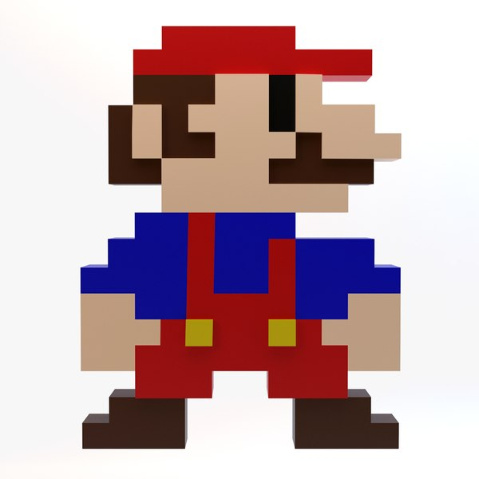
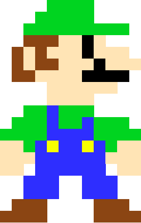

| Bohater nr 1 | Bohater nr 2 | Bohater nr 3 |
|---|---|---|
| Mario | Luigi | ? |
| 25 lat | 25 lat | ? lat |
.
Mario
It's me, Mario! 😄

!!YOUTUBE!!Niewiele jest gier, istniejących w zbiorowej świadomości przez dziesięciolecia
i łączących różne pokolenia. Jedną (jak nie jedyną!) z takich jest gra
Super Mario która w tej dziedzinie zajmuje specjalne miejsce.
Mario
Hej to znowu ja, Mario! 😄

Najprawdopodobniej nie ma takiej osoby na świecie, która nie słyszałaby
o włoskim hydrauliku w kombinezonie, który ma na imię Mario.
Zapewne znajdzie się ktoś, kto nigdy nie zagrał w tę grę i nie jest świadomy
jej skromnych początków, ale, tak czy inaczej, słyszał o samym Mario.
Luigi
It's me, Luigi 😄

W swoim debiutowym występie Mario nawet nie był główną postacią gry.
Do tego nawet nie był hydraulikiem i nie miał na imię Mario.
Po raz pierwszy pojawił się w 1981 roku w przełomowej dla tych czasów
grze zręcznościowej „Donkey Kong”. Postać miała na imię Jumpman i była stolarzem
Swiat Mario w ramce
.
.
Listy:
- pierwszy element listy wyponktoanej numerowanej
- drugi element listy wyponktoanej numerowanej
- trzeci element listy wyponktoanej numerowanej
- pierwszy element bullet listy
- pierwszy element bullet listy
- pierwszy element bullet listy
Pozostałe 4 elementy formatujące html:
pochylenie
podświetlony
przekreślony
indeksdolny